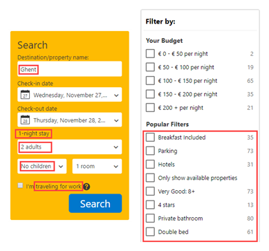

The @action attribute determines what should happen with the various attribute values of the @audience attribute. In this case, the DITAVAL file will exclude all content, that is applicable to a novice audience, from the published output (in other words: all topics or elements that are attributed the attribute value @novice for the @audience attribute are exluded from the publication.). On the other hand, all topics or elements that are connected to the @general audience are not only included, but also highlighted in the publication.
Four possible actions of the DITAVAL file
A DITAVAL file defines four different conditional processing actions in an @action attribute:
Value of @action attribute
Description
Include
This action will include the content in the output.
Exclude
This action will exclude (filter) the content from the output.
Flag
This action will include and highlight the content in the output.
Passthrough
This action will:
include the content in the output
preserve the attribute value as part of the output stream for further processing within the (dynamic) output.
In other words, the conditional processing (or filtering) does not take place during the publishing phase of the DITA content. Instead, the various types of content and their corresponding attribute values are passed on to the output itself, which is where the filtering will take place.
Note: Take for example a search engine with filtering options. A customer of Booking.com will be able to efficiently search through the many possible accomodations that the site offers by using "filters," which are essentiallly attribute values that have been atttributed to the various types of content:
